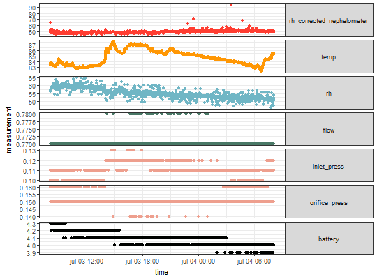

Identify time gaps in the data collection period
identify_lags(micropem, column = "rh_corrected_nephelometer")
character).A data.frame with all the rows of measures where the nephelometer measures is missing with a time to previous missing values smaller than the nephelometer log.
micropem_na <- convert_output(system.file("extdata", "file_with_na.csv", package = "rtimicropem")) micropem_na$plot()identify_lags(micropem_na)#> # A tibble: 103 x 15 #> datetime rh_corrected_nephelometer temp rh battery #> <dttm> <dbl> <dbl> <dbl> <dbl> #> 1 2015-07-03 08:05:52 NA NA NA NA #> 2 2015-07-03 08:05:55 NA NA NA NA #> 3 2015-07-03 08:06:00 NA NA NA 4.3 #> 4 2015-07-03 08:06:05 NA NA NA NA #> 5 2015-07-03 08:09:30 NA NA 57.8 NA #> 6 2015-07-03 08:09:35 NA NA NA NA #> 7 2015-07-03 14:52:30 NA NA 54.7 NA #> 8 2015-07-03 14:52:35 NA NA NA NA #> 9 2015-07-03 14:52:40 NA 87.5 55.0 NA #> 10 2015-07-03 14:52:45 NA NA NA NA #> # ... with 93 more rows, and 10 more variables: inlet_press <dbl>, #> # orifice_press <dbl>, flow <dbl>, x_axis <dbl>, y_axis <dbl>, z_axis <dbl>, #> # vector_sum_composite <dbl>, shutdownreason <chr>, wearing_compliance <chr>, #> # validitywearingcompliance_validation <chr>